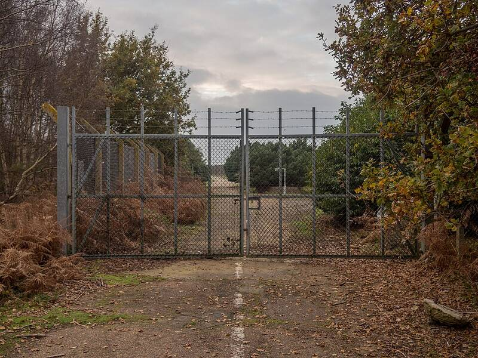

RAF Bentwaters and Woodbridge
Suffolk, England

Twin bases used by the U.S. Air Force during the Cold War. Their personnel were at the center of the 1980 Rendlesham Forest incident. 1
Open in the interactive Watcher
Related
- A craft landed in Rendlesham Forest in 1980 Claim
- Charles Halt Person
Sources
- Rendlesham Forest incident Wikipedia